created by xyzko1
2019年05月01日 19:51:24
本文转载来自 【http://www.cnblogs.com/yangecnu/p/Introduce-RabbitMQ.html】写的很详细。
文件安装包官方DEMO下载地址是：http://pan.baidu.com/s/1c1vgdiC
在企业应用系统领域，会面对不同系统之间的通信、集成与整合，尤其当面临异构系统时，这种分布式的调用与通信变得越发重要。其次，系统中一般会有很多对实时性要求不高的但是执行起来比较较耗时的地方，比如发送短信，邮件提醒，更新文章阅读计数，记录用户操作日志等等，如果实时处理的话，在用户访问量比较大的情况下，对系统压力比较大。
面对这些问题，我们一般会将这些请求，放在消息队列中处理；异构系统之间使用消息进行通讯。消息传递相较文件传递与远程过程调用（RPC）而言，似乎更胜一筹，因为它具有更好的平台无关性，并能够很好地支持并发与异步调用。所以如果系统中出现了如下情况:
- 对操作的实时性要求不高，而需要执行的任务极为耗时；
- 存在异构系统间的整合；
一般的可以考虑引入消息队列。对于第一种情况，常常会选择消息队列来处理执行时间较长的任务。引入的消息队列就成了消息处理的缓冲区。消息队列引入的异步通信机制，使得发送方和接收方都不用等待对方返回成功消息，就可以继续执行下面的代码，从而提高了数据处理的能力。尤其是当访问量和数据流量较大的情况下，就可以结合消息队列与后台任务，通过避开高峰期对大数据进行处理，就可以有效降低数据库处理数据的负荷。
在前面的一篇讲解CQRS模式的文章中，所有的对系统的状态的更改都是通过事件来完成，一般的将事件存储到消息队列中，然后进行统一的处理。
本文简单介绍在RabbitMQ这一消息代理工具，以及在.NET中如何使用RabbitMQ.
环境搭建
首先，由于RabbitMQ使用Erlang编写的，需要运行在Erlang运行时环境上，所以在安装RabbitMQ Server之前需要安装Erlang 运行时环境，可以到Erlang官网下载对应平台的安装文件。如果没有安装运行时环境，安装RabbitMQ Server的时候，会提示需要先安装Erlang环境。 安装完成之后，确保已经将Erlang的安装路径注册到系统的环境变量中。安装完Erlang之后，这个环境会自动设置，如果没有，在administrator环境下在控制台下面输入，也可以设置：
Setx ERLANG_HOME “D:\Program Files (x86)\erl6.3″
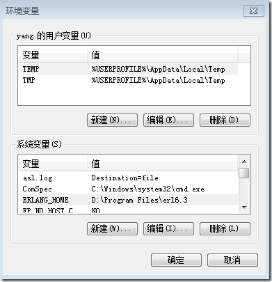
然后，去RabbitMQ官网下载RabbitMQ Server服务端程序，选择合适的平台版本下载。安装完成之后，就可以开始使用了。
现在就可以对RabbitMQ Server进行配置了。
首先，切换到RabbitMQ Server的安装目录：
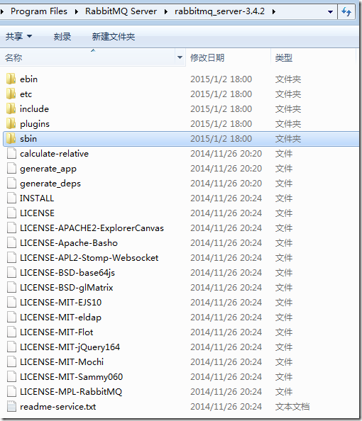
在sbin下面有很多batch文件，用来控制RabbitMQ Server，当然您也可以直接在安装开始菜单中来执行相应的操作：
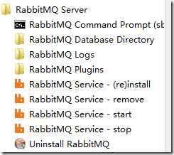
最简单的方式是使RabbitMQ以Windows Service的方式在后台运行，所以我们需要以管理员权限打开cmd，然后切换到sbin目录下，执行这三条命令即可：
rabbitmq-service install rabbitmq-service enable rabbitmq-service start
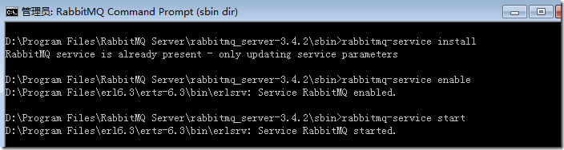
现在RabbitMQ的服务端已经启动起来了。
下面可以使用sbin目录下面的rabbitmqctl.bat这个脚本来查看和控制服务端状态的，在cmd中直接运行rabbitmqctl status。如果看到以下结果：
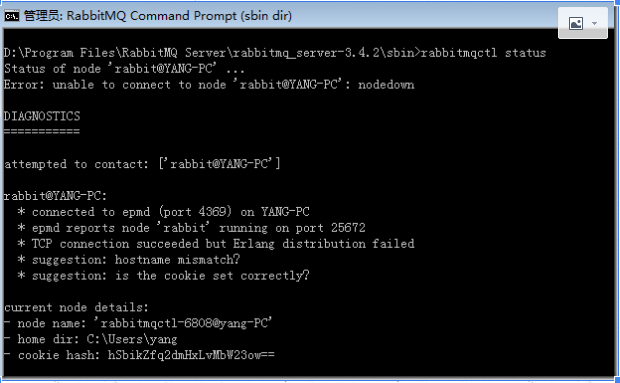
显示node没有连接上，需要到C:\Windows目录下，将.erlang.cookie文件，拷贝到用户目录下 C:\Users{用户名}，这是Erlang的Cookie文件，允许与Erlang进行交互，现在重复运行刚才的命令就会得到如下信息：
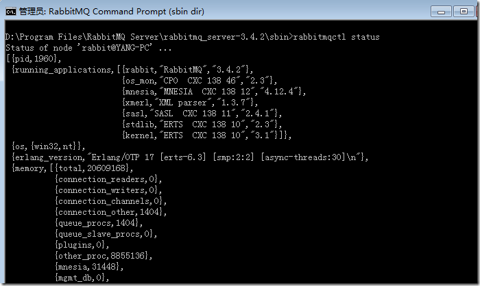
RabbitMQ Server上面也有用户概念，安装好之后，使用rabbitmqctl list_users命令，可以看到上面目前的用户：
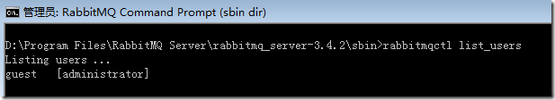
可以看到，现在只有一个角色为administrator的名为guest的用户，这个是RabbitMQ默认为我们创建的，他有RabbitMQ的所有权限，一般的，我们需要新建一个我们自己的用户，设置密码，并授予权限，并将其设置为管理员，可以使用下面的命令来执行这一操作：
rabbitmqctl add_user yy hello! rabbitmqctl set_permissions yy “." ".” “.*” rabbitmqctl set_user_tags yy administrator
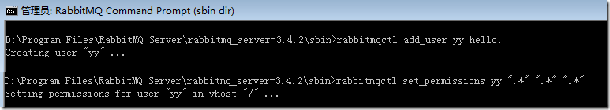
上面的一条命令添加了一个名为yy的用户，并设置了密码hello！，下面的命令为用户yy分别授予对所有消息队列的配置、读和写的权限。
现在我们可以将默认的guest用户删掉，使用下面的命令即可：
rabbitmqctl delete_user guest
如果要修改密码，可以使用下面的命令：
rabbitmqctl change_password {username} {newpassowrd}
开始使用
在.NET中使用RabbitMQ需要下载RabbitMQ的客户端程序集，可以到官网下载，下载解压后就可以得到RabbitMQ.Client.dll，这就是RabbitMQ的客户端。
在使用RabitMQ之前，需要对下面的几个基本概念说明一下：
RabbitMQ是一个消息代理。他从消息生产者(producers)那里接收消息，然后把消息送给消息消费者（consumer）在发送和接受之间，他能够根据设置的规则进行路由，缓存和持久化。
一般提到RabbitMQ和消息，都用到一些专有名词。
生产(Producing)意思就是发送。发送消息的程序就是一个生产者(producer)。我们一般用"P"来表示：
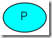
队列(queue)就是邮箱的名称。消息通过你的应用程序和RabbitMQ进行传输，它们只能存储在队列（queue）中。 队列（queue）容量没有限制，你要存储多少消息都可以——基本上是一个无限的缓冲区。多个生产者（producers）能够把消息发送给同一个队列，同样，多个消费者（consumers）也能从同一个队列（queue）中获取数据。队列可以画成这样（图上是队列的名称）：
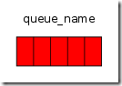
消费（Consuming）和获取消息是一样的意思。一个消费者（consumer）就是一个等待获取消息的程序。我们把它画作"C"：
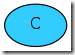
通常，消息生产者，消息消费者和消息代理不在同一台机器上。
Hello World
为了展示RabbitMQ的基本使用，我们发送一个HelloWorld消息，然后接收并处理。
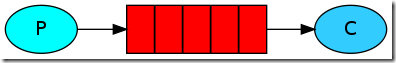
首先创建一个控制台程序，用来将消息发送到RabbitMQ的消息队列中，代码如下：
1 | static void Main(string[] args) |
首先，需要创建一个ConnectionFactory，设置目标，由于是在本机，所以设置为localhost，如果RabbitMQ不在本机，只需要设置目标机器的IP地址或者机器名称即可，然后设置前面创建的用户名yy和密码hello！。
紧接着要创建一个Channel，如果要发送消息，需要创建一个队列，然后将消息发布到这个队列中。在创建队列的时候，只有RabbitMQ上该队列不存在，才会去创建。消息是以二进制数组的形式传输的，所以如果消息是实体对象的话，需要序列化和然后转化为二进制数组。
现在客户端发送代码已经写好了，运行之后，消息会发布到RabbitMQ的消息队列中，现在需要编写服务端的代码连接到RabbitMQ上去获取这些消息。
同样，创建一个名为Receive的服务端控制台应用程序，服务端代码如下：
1 | static void Main(string[] args) |
和发送一样，首先需要定义连接，然后声明消息队列。要接收消息，需要定义一个Consume，然后从消息队列中不断Dequeue消息，然后处理。
现在发送端和接收端的代码都写好了，运行发送端，发送消息：
现在，名为hello的消息队列中，发送了一条消息。这条消息存储到了RabbitMQ的服务器上了。使用rabbitmqctl 的list_queues可以查看所有的消息队列，以及里面的消息个数，可以看到，目前Rabbitmq上只有一个消息队列，里面只有一条消息：
D:\Program Files\RabbitMQ Server\rabbitmq_server-3.4.2\sbin>rabbitmqctl list_queues
Listing queues …
hello 1
现在运行接收端程序，如下：
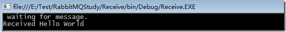
可以看到，已经接受到了客户端发送的Hello World，现在再来看RabitMQ上的消息队列信息：
D:\Program Files\RabbitMQ Server\rabbitmq_server-3.4.2\sbin>rabbitmqctl list_queues
Listing queues …
hello 0
可以看到，hello这个队列中的消息队列个数为0，这表示，当接收端，接收到消息之后，RabbitMQ上就把这个消息删掉了。
工作队列
前面的例子展示了如何往一个指定的消息队列中发送和收取消息。现在我们创建一个工作队列（work queue）来将一些耗时的任务分发给多个工作者（workers）：
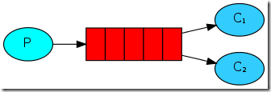
工作队列（work queues, 又称任务队列Task Queues）的主要思想是为了避免立即执行并等待一些占用大量资源、时间的操作完成。而是把任务（Task）当作消息发送到队列中，稍后处理。一个运行在后台的工作者（worker）进程就会取出任务然后处理。当运行多个工作者（workers）时，任务会在它们之间共享。
这个在网络应用中非常有用，它可以在短暂的HTTP请求中处理一些复杂的任务。在一些实时性要求不太高的地方，我们可以处理完主要操作之后，以消息的方式来处理其他的不紧要的操作，比如写日志等等。
准备
在第一部分，发送了一个包含“Hello World!”的字符串消息。现在发送一些字符串，把这些字符串当作复杂的任务。这里使用time.sleep()函数来模拟耗时的任务。在字符串中加上点号（.）来表示任务的复杂程度，一个点（.）将会耗时1秒钟。比如"Hello…"就会耗时3秒钟。
对之前示例的send.cs做些简单的调整，以便可以发送随意的消息。这个程序会按照计划发送任务到我们的工作队列中。
1 | static void Main(string[] args) |
加粗部分是经过修改过了的。
接着我们修改接收端，让他根据消息中的逗点的个数来Sleep对应的秒数：
1 | static void Main(string[] args) |
轮询分发
使用工作队列的一个好处就是它能够并行的处理队列。如果堆积了很多任务，我们只需要添加更多的工作者（workers）就可以了，扩展很简单。
现在，我们先启动两个接收端，等待接受消息，然后启动一个发送端开始发送消息。
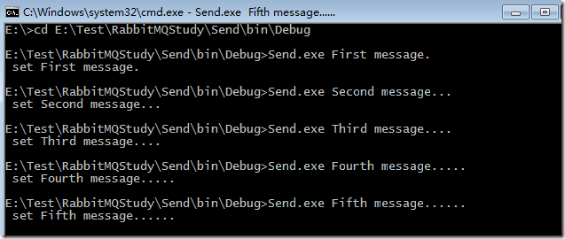
在cmd条件下，发送了5条消息，每条消息后面的逗点表示该消息需要执行的时长，来模拟耗时的操作。
然后可以看到，两个接收端依次接收到了发出的消息：
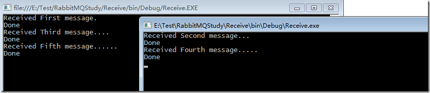
默认，RabbitMQ会将每个消息按照顺序依次分发给下一个消费者。所以每个消费者接收到的消息个数大致是平均的。 这种消息分发的方式称之为轮询（round-robin）。
消息响应
当处理一个比较耗时得任务的时候，也许想知道消费者（consumers）是否运行到一半就挂掉。在当前的代码中，当RabbitMQ将消息发送给消费者（consumers）之后，马上就会将该消息从队列中移除。此时，如果把处理这个消息的工作者（worker）停掉，正在处理的这条消息就会丢失。同时，所有发送到这个工作者的还没有处理的消息都会丢失。
我们不想丢失任何任务消息。如果一个工作者（worker）挂掉了，我们希望该消息会重新发送给其他的工作者（worker）。
为了防止消息丢失，RabbitMQ提供了消息响应（acknowledgments）机制。消费者会通过一个ack（响应），告诉RabbitMQ已经收到并处理了某条消息，然后RabbitMQ才会释放并删除这条消息。
如果消费者（consumer）挂掉了，没有发送响应，RabbitMQ就会认为消息没有被完全处理，然后重新发送给其他消费者（consumer）。这样，即使工作者（workers）偶尔的挂掉，也不会丢失消息。
消息是没有超时这个概念的；当工作者与它断开连的时候，RabbitMQ会重新发送消息。这样在处理一个耗时非常长的消息任务的时候就不会出问题了。
消息响应默认是开启的。在之前的例子中使用了no_ack=True标识把它关闭。是时候移除这个标识了，当工作者（worker）完成了任务，就发送一个响应。
1 | channel.BasicConsume("hello", false, consumer); |
现在,可以保证,即使正在处理消息的工作者被停掉,这些消息也不会丢失,所有没有被应答的消息会被重新发送给其他工作者.
一个很常见的错误就是忘掉了BasicAck这个方法,这个错误很常见,但是后果很严重. 当客户端退出时,待处理的消息就会被重新分发,但是RabitMQ会消耗越来越多的内存,因为这些没有被应答的消息不能够被释放。调试这种case，可以使用rabbitmqct打印messages_unacknoledged字段。
rabbitmqctl list_queues name messages_ready messages_unacknowledged
Listing queues …
hello 0 0
…done.
消息持久化
前面已经搞定了即使消费者down掉，任务也不会丢失，但是，如果RabbitMQ Server停掉了，那么这些消息还是会丢失。
当RabbitMQ Server 关闭或者崩溃，那么里面存储的队列和消息默认是不会保存下来的。如果要让RabbitMQ保存住消息，需要在两个地方同时设置：需要保证队列和消息都是持久化的。
首先，要保证RabbitMQ不会丢失队列，所以要做如下设置：
bool durable = true;
channel.QueueDeclare(“hello”, durable, false, false, null);
虽然在语法上是正确的，但是在目前阶段是不正确的，因为我们之前已经定义了一个非持久化的hello队列。RabbitMQ不允许我们使用不同的参数重新定义一个已经存在的同名队列，如果这样做就会报错。现在，定义另外一个不同名称的队列：
bool durable = true;
channel.queueDeclare(“task_queue”, durable, false, false, null);
queueDeclare 这个改动需要在发送端和接收端同时设置。
现在保证了task_queue这个消息队列即使在RabbitMQ Server重启之后，队列也不会丢失。 然后需要保证消息也是持久化的， 这可以通过设置IBasicProperties.SetPersistent 为true来实现：
var properties = channel.CreateBasicProperties();
properties.SetPersistent(true);
需要注意的是，将消息设置为持久化并不能完全保证消息不丢失。虽然他告诉RabbitMQ将消息保存到磁盘上，但是在RabbitMQ接收到消息和将其保存到磁盘上这之间仍然有一个小的时间窗口。 RabbitMQ 可能只是将消息保存到了缓存中，并没有将其写入到磁盘上。持久化是不能够一定保证的，但是对于一个简单任务队列来说已经足够。如果需要消息队列持久化的强保证，可以使用publisher confirms
公平分发
你可能会注意到，消息的分发可能并没有如我们想要的那样公平分配。比如，对于两个工作者。当奇数个消息的任务比较重，但是偶数个消息任务比较轻时，奇数个工作者始终处理忙碌状态，而偶数个工作者始终处理空闲状态。但是RabbitMQ并不知道这些，他仍然会平均依次的分发消息。
为了改变这一状态，我们可以使用basicQos方法，设置perfetchCount=1 。这样就告诉RabbitMQ 不要在同一时间给一个工作者发送多于1个的消息，或者换句话说。在一个工作者还在处理消息，并且没有响应消息之前，不要给他分发新的消息。相反，将这条新的消息发送给下一个不那么忙碌的工作者。
channel.BasicQos(0, 1, false);
完整实例
现在将所有这些放在一起：
发送端代码如下：
1 | static void Main(string[] args) |
接收端代码如下：
1 | static void Main(string[] args) |
管理界面
RabbitMQ还有一个管理界面，通过该界面可以查看RabbitMQ Server 当前的状态，该界面是以插件形式提供的，并且在安装RabbitMQ的时候已经自带了该插件。需要做的是在RabbitMQ控制台界面中启用该插件，命令如下：
rabbitmq-plugins enable rabbitmq_management
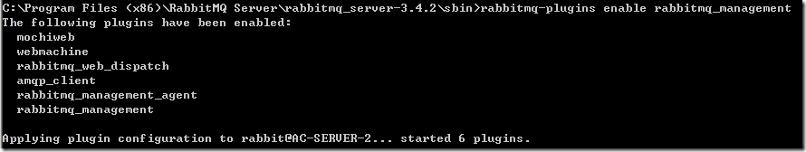
现在，在浏览器中输入 http://server-name:15672/ server-name换成机器地址或者域名，如果是本地的，直接用localhost（RabbitMQ 3.0之前版本端口号为55672）在输入之后，弹出登录界面，使用我们之前创建的用户登录。
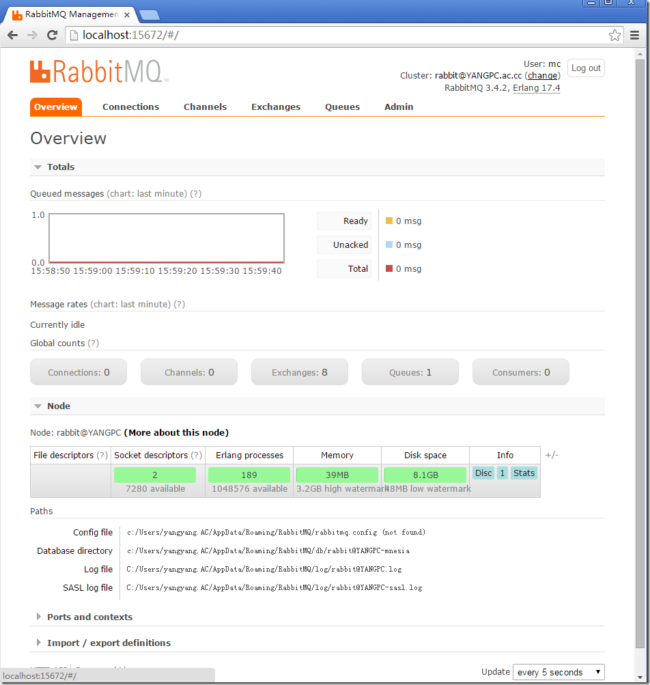
在该界面上可以看到当前RabbitMQServer的所有状态。
总结
本文简单介绍了消息队列的相关概念，并介绍了RabbitMQ消息代理的基本原理以及在Windows 上如何安装RabbitMQ和在.NET中如何使用RabbitMQ。消息队列在构建分布式系统和提高系统的可扩展性和响应性方面有着很重要的作用，希望本文对您了解消息队列以及如何使用RabbitMQ有所帮助。
Please Star this Project if you like it! Follow would also be appreciated!
Peace!